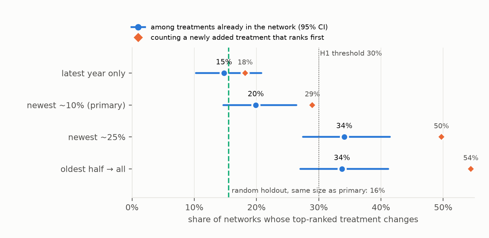
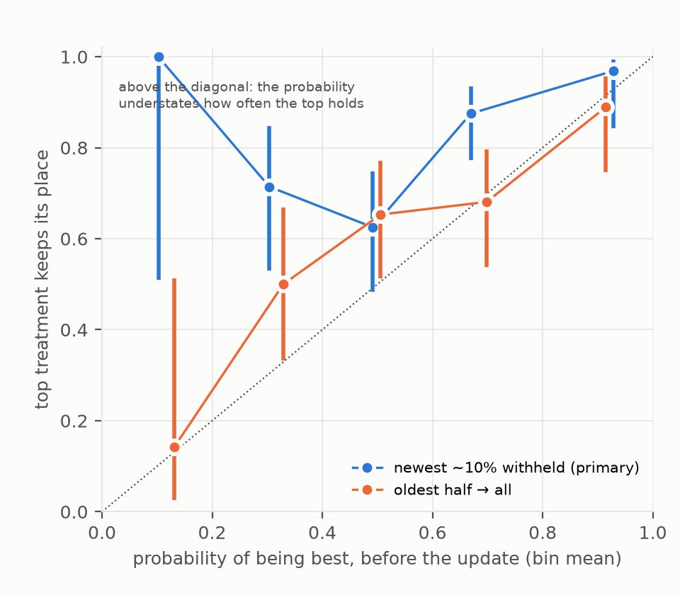
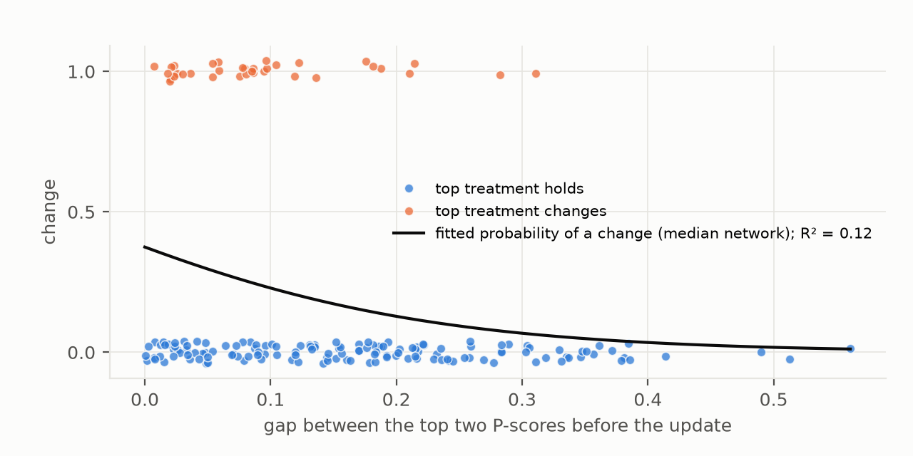

Verdict: Refuted. Two of the lead's three claims fail; the third holds. - Rankings are less fragile than predicted (H1). - The probability of being best errs on the cautious side, not the confident one (H2). - Which networks flip is hard to predict (H3, Supported).
- One ranking in five changes when the newest studies arrive (H1, Refuted).
- The test. The newest tranche of studies was withheld: about 10% by plan, a median of 15% once whole publication years are kept together. When it is added back, the top-ranked treatment changes in 19.9% of networks (95% CI 14.7–26.4%). The prediction was at least 30%.
- Counting new treatments. The preregistered count looks only at treatments that were already in the network. Counting a newly added treatment that goes straight to the top, the leader changes in 29% of networks.
- The probability of being best understates how often the top holds (H2, Refuted in the opposite direction).
- The size of the gap. Before the update, the top treatment's average probability of being best is 0.61. It keeps its place in 80% of networks. The stated probability understates retention by 19 points (13–25), where the lead predicted an overstatement of at least 20.
- Over a longer horizon (the oldest half of the studies, then all of them) the probability is nearly calibrated: 0.59 against 66% retention.
- Which networks flip is hard to predict (H3, Supported). The gap between the top two treatments and the network's size together explain a Nagelkerke R² of 0.12 (0.04–0.24) of which networks flip. A small gap is the one consistent warning sign.
- New studies are barely more disruptive than any studies. Withholding a random set of studies of the same size changes the top treatment 15.5% of the time, against 19.9% for the newest. The difference, 4.4 points (−0.6 to 9.7), could be chance.
In plain terms
When doctors and funding agencies compare many treatments for the same condition, they often rely on a "network meta-analysis". This combines all the trials into a ranking, and usually reports the chance that each treatment is the best. We asked whether that ranking behaves like a forecast: does the top treatment stay on top when more trials arrive?
We took 176 published analyses from an open database and replayed history. In each, we hid the most recent trials, ranked the treatments without them, then added them back.
- How often the winner changed. The top treatment changed about one time in five. If a brand-new treatment that went straight to the top is counted, it was closer to three in ten. When the analysis started from only the oldest half of the trials, the winner changed one time in three.
- Hiding random trials did nearly as much. The newest trials were not much more disruptive than any other trials of the same number.
- The stated chance of being best was cautious. A treatment given a 60% chance of being best kept its top spot about 80% of the time. Over the longer horizon, the stated chance was about right.
- The warning sign. Rankings were most likely to change when the top two treatments were close. Even so, the closeness of the race and the number of trials together predicted poorly which rankings would change.
So a ranking is a reasonable but fallible snapshot. A narrow lead at the top deserves the least confidence.
What was asked
The lead (future-health-nma-rank-temporal-fragility) asked whether NMA treatment rankings behave like forecasts.
Three preregistered hypotheses (plan.md):
- H1: withholding and restoring the newest tranche of studies changes the top-ranked treatment in at least 30% of
networks.
- H2: the pre-update probability that the top treatment is best overstates its empirical retention rate by at least
20 percentage points.
- H3: the top-two gap and network size explain less than half of the variation in which networks flip.
What was already known
| Work | What it established | What it left open |
|---|---|---|
| Daly et al., BMJ Open 2019 | leave-one-study-out rank agreement in five networks (kappa down to about 0.4) | five networks; random, not temporal, removal; no calibration |
| Trinquart and colleagues; Salanti and colleagues | ranking statistics carry large uncertainty and must be read with the certainty of evidence | no comparison of stated probabilities with realised rank retention |
| ISPOR "Souring on SUCRAs" (2022) | network composition can shift SUCRA rankings | no empirical rate |
| Petropoulou et al., J Clin Epidemiol 2016 (nmadb) | a curated database of published NMAs with downloadable data | not used for temporal holdouts |
No study had run a temporal holdout across hundreds of real networks, or reported a calibration curve for the probability of being best.
How it was done
Data. - Source. The Network Meta-Analysis Database (nmadb) catalogue and all 278 "Verified" datasets, downloaded through its public REDCap API. The public token is read at run time from the archived CRAN package and not stored. The datasets come with checksums. - Era. The networks were published 2000–2015, and their newest studies are a median of 2010.
Inclusion.
| step | networks |
|---|---|
| verified datasets | 278 |
| parsed into one schema (one has no study id) | 277 |
| at least 3 treatments and 10 studies | 236 |
| a publication year for at least 90% of studies (29 from the study label, D1) | 208 |
| a direction of benefit that could be determined (D2) | 207 |
| arm-level networks (primary) / contrast-level networks (sensitivity) | 178 / 29 |
| full and pre-update fits succeed | 176 / 28 |
Holdouts (plan §4). - The tranche. Studies were ordered by publication year. The newest tranche is the smallest set of whole latest years holding at least 10% of studies. Same-year studies are never split, so the median tranche is 15% of studies and 20% of participants. - Secondary holdouts: - the newest 25%; - the latest year alone; - a longer horizon: the oldest half of the studies, then all of them. - The control. 200 random holdouts of the same size as the primary tranche, per network.
Ranking. - The fit. Random-effects frequentist NMA (netmeta 3.6.1, DerSimonian–Laird), on each network's published effect measure. - The ranking metric. The P-score, the frequentist SUCRA. It equals netmeta's own P-score exactly. - The flip. The pre-update top treatment differs from the full-data top treatment, compared over the treatments in the pre-update network. - The probability of being best. From netmeta's resampling rankogram (10,000 draws, seeded).
Validation before any holdout result. - V1, parsing. 23 networks, oversampling the label-year ones, were compared with their raw sheets. 22 were right. The one error was a missed year in one study, now fixed. - Direction of benefit (D2). The catalogue's "harmful/beneficial" label and the sheets' own labels often disagree. - Arm-level networks. Every disagreement was checked against the outcome and the arm data. The catalogue was right in all but one. - Contrast-level networks. The label describes the outcome concept: "overall survival" is beneficial, though the effect is a hazard of death. The sheets do not say which way round the contrast runs, and both conventions occur. Each network was adjudicated from placebo-controlled contrasts and landmark trials whose published estimates appear in the data. These networks form a sensitivity set. - V2, counts. Parsed study counts match the catalogue in 165 of 207 networks, and treatment counts in 106 of 168. Most differences are reviews whose catalogue entry counts every outcome. - V3, the published best. For 30 random networks, the authors' abstract was read. - Where the authors name a best treatment (13 networks), the full-network top treatment matches in 9. - In three of the four disagreements, the authors' choice ranks second or third here. Their analyses used different models or outcome definitions. - Placebo or no treatment ranks at or near the bottom in all 19 networks where that could be checked.
Results
H1: how often the top treatment changes
H1, Refuted. In the primary holdout, 35 of 176 networks (19.9%, 95% CI 14.7–26.4%) have a different top treatment once the newest tranche is added back. Supported needed at least 30% with a lower bound of at least 25%; the upper bound is below 30%.
| update | flips (preregistered) | with a new treatment ranking first |
|---|---|---|
| the latest year only | 15% (10–21%) | 18% |
| the newest ~10% (primary) | 20% (15–26%) | 29% |
| the newest ~25% | 34% (27–41%) | 50% |
| the oldest half → all | 34% (27–41%) | 54% |
New entrants. In 18 of 176 networks, the full-data top treatment did not exist in the pre-update network. The plan counts these separately, because the decision before the update could not have chosen them. Counting them, the top changes in 51 of 176 networks (29%).
The control. Random holdouts of the same size flip a mean of 15.5% of networks. The difference between newest and random studies is 4.4 points (95% CI −0.6 to 9.7). Losing the newest studies is barely more disruptive than losing any studies of the same number.
Rank agreement beyond the top. Kendall's τ between the pre-update and full P-scores has a median of 0.90. The top-two set changes in 43 networks (24%).
Robustness. The rate barely moves under other choices: - a common-effect model: 19.3%; - the resampling SUCRA in place of the P-score: 21.6%; - adding the 28 contrast-level networks: 18.1%; - adding only their high-confidence direction calls: 18.3%.


Figure 1. Share of networks whose top-ranked treatment changes, by size of the update. Circles: the preregistered definition (treatments already in the network), with 95% intervals. Diamonds: also counting a newly added treatment that ranks first. Dashed line: random holdouts of the primary size.
H2: is the probability of being best calibrated?
H2, Refuted, in the opposite direction. - The numbers. The pre-update top treatment's mean probability of being best is 0.61. It keeps top rank in 80% of networks, so the stated probability understates retention by 19 points (95% CI 13–25). The lead predicted an overstatement of at least 20 points. - By bin. - Bins near 0.3 and 0.7 retain 71% and 88%. - The 0.5 bin is closest (0.50 against 63%). - Of the 32 networks with a probability above 0.8, 31 kept their top treatment.
This is partly by construction. - The probability measures something else. It estimates the chance that a treatment is truly best given current evidence. Retention after a small update is higher than that, because the updated analysis shares most of its data with the old one. - The fairer forecast test is the longer horizon, where the evidence roughly doubles. There the mean probability is 0.59 against 66% retention, a gap of 7 points (−14 to −0.3), and the curve sits close to the diagonal (Figure 2).


Figure 2. Calibration of the pre-update probability of being best against the share of networks whose top treatment keeps its place. Bins of width 0.2 with at least 3 networks; bars are 95% Wilson intervals.
H3: can fragile rankings be spotted in advance?
H3, Supported. A logistic model of the flip on the pre-update top-two P-score gap and the log number of studies explains a Nagelkerke R² of 0.12 (95% CI 0.04–0.24; AUC 0.69). - The gap is the signal. Networks with a gap below 0.05 flip 24% of the time, and those with a gap of 0.2 or more flip 7% of the time. - Size is not. Network size adds little (p = 0.19 in the full model). - The full preregistered predictor set. Number of treatments, I², the direct-evidence share of the top comparison, the withheld share of participants and the outcome type raise R² to 0.17 (AUC 0.73). - Only the gap (p < 0.001) and, weakly, the number of treatments (p = 0.04) carry signal.


Figure 3. Each network by its pre-update top-two P-score gap and whether its top treatment changed. The curve is the H3 model at the median network size.
What this does and does not show
- Rankings from published NMAs are moderately stable. About one in five top treatments changes when the newest studies are added back, and about one in three over a longer horizon. A newly approved treatment that goes straight to the top is a separate, common route to a changed recommendation.
- The probability of being best is not overconfident as a forecast. Over a small update it is conservative. Over a horizon on which the evidence roughly doubles, it is about right. Reading it as "the chance this is still the top treatment next time" is safe, perhaps too safe.
- The newest studies are not special. Their removal moves rankings about as much as removing any studies of the same number. This argues against a systematic "late-arriving evidence overturns early winners" pattern, at least in this era of networks.
- A narrow lead at the top is the warning sign, and a weak one. No simple feature of a network reliably separates fragile rankings from stable ones.
Limitations. - Retrospective. The "next tranche" is the last tranche the authors included, not evidence published after the review. Networks from 2000–2015 may differ from current practice. - Whole-year tranches. Keeping same-year studies together makes the primary tranche larger than 10% (median 15%). The latest-year-only holdout (15% flips) brackets this from below. - Frequentist ranking. P-scores and resampled probabilities stand in for the Bayesian SUCRA and probability of being best that many published networks reported. V3 shows the top treatment usually matches the authors'. - Direction of benefit. It is adjudicated for the contrast-level networks, which are therefore a sensitivity set. For arm-level networks, it is checked against the data wherever the two labels disagree. - Not attempted. Reproducing each network's published estimates; the database does not store them.
Process and deviations
Preregistered in plan.md (6152aa8), with all code committed before the outputs it produces.
- D1: year-column variants, and a study-label fallback for networks with no year column.
- D2: the direction of benefit adjudicated per network; contrast-level networks moved to a sensitivity set; an
explicit list of natural-scale sheets. The "all positive means natural scale" rule had double-logged two networks.
- D3: a split fallback for contrast-level multi-arm studies whose variances netmeta cannot invert (12 networks).
Reproducing it
venv/bin/python code/fetch.py # nmadb catalogue + datasets (public token read from the CRAN source)
venv/bin/python code/standardise.py; venv/bin/python code/direction.py
venv/bin/python code/validate_parse.py # V1 evidence; adjudication in results/tables/v1_parse_validation.csv
venv/bin/python code/holdouts.py full_only; Rscript code/nma.R data/jobs_full.json data/fits_full.jsonl 24
venv/bin/python code/validate_counts.py; venv/bin/python code/validate_published.py # V2, V3
venv/bin/python code/holdouts.py; Rscript code/nma.R data/jobs.json data/fits.jsonl 24 # 42,435 fits, ~20 min on 24 cores
venv/bin/python code/analysis.py; venv/bin/python code/figures.py
R 4.4.3 and netmeta 3.6.1 come from conda-forge. Released in results/tables/:
- primary.json;
- the per-network results (network_results.csv);
- the direction table;
- the three validation files.